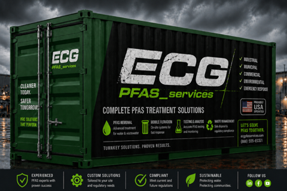

ECG is the nation's leading PFAS remediation expert — tackling "forever chemicals" across industrial sites, airports, military bases, and municipal water systems nationwide. Our proven methodology delivers complete, compliant cleanup.
Nationwide PFAS Remediation
PFAS — per- and polyfluoroalkyl substances — are "forever chemicals" found in firefighting foam, industrial coatings, and countless building products. ECG is at the forefront of PFAS remediation nationwide, having led the region's largest PFAS cleanup project at a major airline carrier — and now expanding across the country.
ECG delivers PFAS remediation services across the country — from industrial sites to airports, military installations to municipal water systems.
ECG successfully completed the largest PFAS remediation project in Southern California for a major airline carrier, setting the standard for complex PFAS cleanup.
ECG leadership presented on PFAS dangers to the Environmental Information Association alongside Costera Waste & Environmental and Group Delta Consultants.
Our team handles PFAS across all affected media — soil, groundwater, and infrastructure — with full compliance with evolving EPA and state regulations nationwide.

▶ ECG PFAS Remediation — Complete Treatment Solutions
Our PFAS Remediation Process
Our proven PFAS remediation methodology ensures complete, compliant, and cost-effective cleanup for clients across the nation.
Comprehensive site evaluation and PFAS testing to determine contamination levels and scope.
Tailored strategy development using the latest PFAS remediation technologies and methods.
Expert remediation with real-time monitoring, EPA compliance, and safety protocols.
Final testing, regulatory documentation, and project closeout with full transparency.
Southern California Services
From a single-room abatement to complex demolition projects, ECG delivers the expertise, licensing, and equipment to handle every phase — safely, on schedule, and in compliance. PFAS services are available nationwide. All other services are available in Southern California.
Leaders in per- and polyfluoroalkyl substances remediation. ECG performs PFAS cleanup across the nation — from industrial sites to airports and beyond.
Complete building takedowns, interior selective demolition, site clearing and excavation for commercial and industrial structures throughout Southern California.
Identification, removal, repair and encapsulation of asbestos-containing materials from any structure type in Southern California.
Comprehensive lead abatement and remediation for residential, commercial, and institutional clients throughout Southern California.
Contaminated soil testing, remediation, and hydrocarbon and groundwater cleanup in Southern California.
Full mold and microbial remediation services for commercial, industrial, and institutional buildings in Southern California.
Diamond saw cutting, concrete coring, and surface grinding services for Southern California projects.
State-of-the-art SteraMist precautionary sterilization for commercial, healthcare, education, and public facilities in Southern California.
Industries We Serve
ECG has successfully completed thousands of projects for customers across every major commercial, public, and industrial sector — with PFAS expertise spanning the nation.
Our Story
Environmental Construction Group was founded and incorporated in 2002 in Signal Hill, California. For over two decades, ECG has grown into one of the leading hazardous materials abatement and demolition contractors in all of Southern California.
Today ECG provides a wide range of environmental, industrial, and demolition services that comply with all federal, state, and local regulations — serving private industry, commercial clients, public agencies, and private institutions throughout California.
Our management team brings over 250 years of combined experience navigating an ever-changing marketplace, ensuring every customer receives exceptional service, from planning through final clearance.
Looking ahead: ECG is expanding its PFAS remediation services nationwide — bringing our proven expertise to clients across the country while continuing to serve Southern California with our full suite of environmental services.
We believe in a team-approach philosophy. By partnering with owners, general contractors, and consultants, ECG ensures the most efficient, cost-effective, and safest project possible.
Licenses & Certifications
Giving Back
ECG feels a deep responsibility to give back to the Southern California community where we live and work. We donate to numerous charities and contribute our services where they can make the greatest impact.
From providing free demolition services for transitional housing to supporting challenged athletes, ECG's commitment extends far beyond the job site.
🇺🇸 While our PFAS work now spans the nation, our heart and headquarters remain in Southern California.
Organizations We Support
Request a Consultation